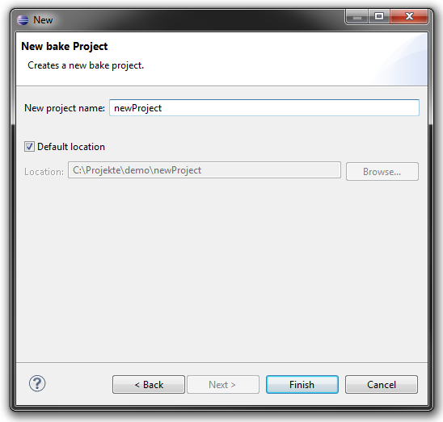
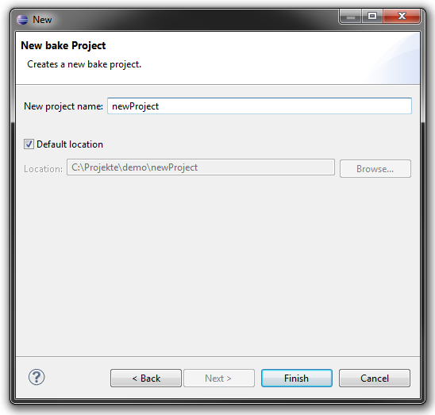
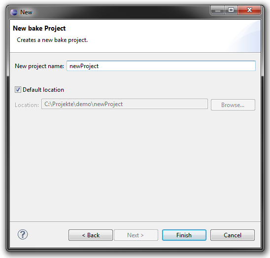

Choose a name. If you have more than one workspace root, you can also choose a location.

Choose a name. If you have more than one workspace root, you can also choose a location.
A new folder with three files will be created. .cproject and .project wrapper files for Eclipse and an almost empty Project.meta which can be filled with build configurations: